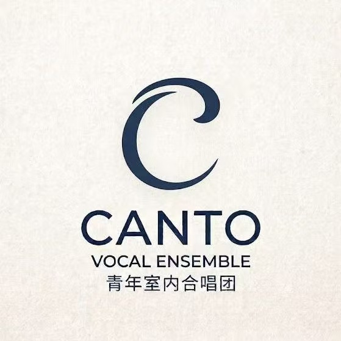
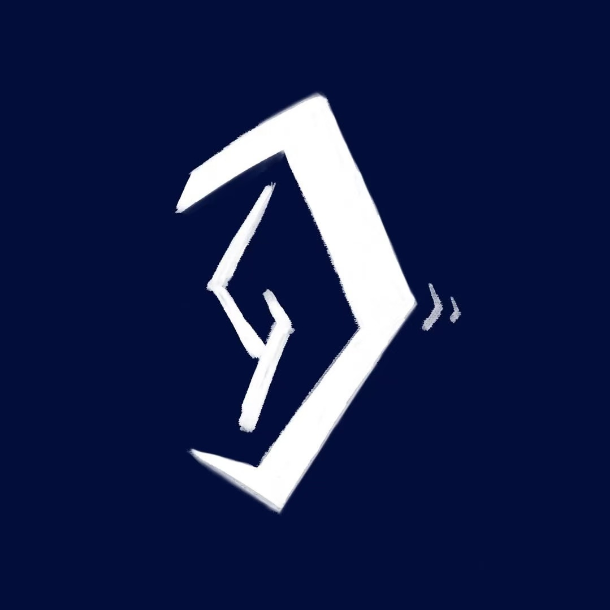

申晋宇创办的CANTO青年室内合唱团是立足北京的新锐室内合唱团体,专注演绎多风格合唱作品。合唱团秉持回归人声本质的艺术理念,兼顾古典作品的庄重质感与当代作品的多元风格。以专业化、年轻化为发展方向，致力于打造高质量的室内合唱艺术平台。未来，团队将持续推出专场音乐会、专题展演及原创作品展示等艺术活动，深耕室内合唱艺术。
The CANTO Vocal Ensemble is a chamber choir founded by Shen Jinyu, based in Beijing, specialising in the performance of choral works across a variety of styles. Upholding an artistic philosophy centred on the essence of the individual artistic voice. In the future, the ensemble will continue to organise chroal concerts, commissioned works concerts , deepening its engagement with the field of chamber choir whilst continuing to promote the diversity of choral art.
访问主页 / Visit Homepage →
申晋宇创办的《大耳青年》是一档访谈与分享的播客，与不同专业背景的朋友们谈论音乐和艺术。我们邀请各行各业的朋友们坐下对谈，围绕音乐、艺术与生活展开交流。在对话中，倾听不同职业背景的人分享与音乐艺术相伴的真实体验、思考与选择。
This is a podcast programm featuring interviews and discussions, where we talk about music and the arts with friends from diverse professional backgrounds.
收听播客 / Listen to Podcast →